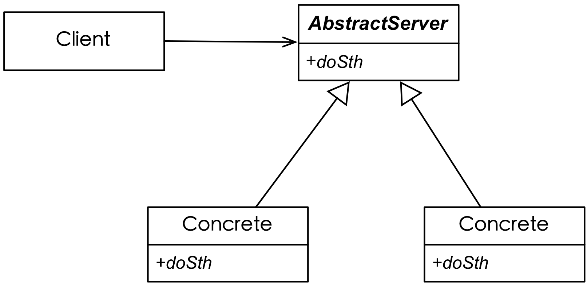

<!DOCTYPE html>
<html lang="en"></html>
<head>
  <meta charset="utf-8">
  <title>inheritance</title>
  <meta name="author" content="俸志刚">
  <meta name="apple-mobile-web-app-capable" content="yes">
  <meta name="apple-mobile-web-app-status-bar-style" content="black-translucent">
  <meta name="viewport" content="width=device-width, initial-scale=1.0, maximum-scale=2.0, user-scalable=yes">
  <link rel="stylesheet" href="css/reveal_bigFont.css">
  <link id="theme" rel="stylesheet" href="css/theme/simple.css">
  <link rel="stylesheet" href="../lib/bootstrap/css/bootstrap.min.css">
  <body>
    <div class="reveal">
      <div class="slides">
        <section>
          <h3>inheritance</h3><br>
          <h3>继承</h3><br>
          <h3>is-a</h3>
        </section>
        <section id="example3_4">
          <h3>【例3-4】Clock & AlarmClock</h3>
          <pre>class Clock{
public:
    void setTime(int h,int m);
    void dispTime();
};
class AlarmClock:public Clock{
public:
    void setAlarm(int h,int m);
    bool checkAlarm();
    void stopAlarm();
    void clearAlarm();
};
</pre>
        </section>
        <section id="practice3_4">
          <h3>【课堂练习3-4】</h3>
          <h3>Person</h3><br>
          <h3>Student</h3><br>
          <h3>Teacher</h3><br>
          <h3>CourseRep(科代表)</h3>
        </section>
        <section id="example3_5">
          <section>
            <h3>【例3-5】某图形系统，包含多种图形类Circle、Rect、Line、Point等</h3><br>
            <h3>能否统一管理？</h3>
          </section>
          <section>
            <h3>Shape & Circle</h3>
            <pre>class Shape{};

class Circle:public Shape{
public:
    Circle(Point center,float r);
    float area(){
        return Pie * r * r;
    }
private:
};
</pre>
          </section>
          <section>
            <h3>Shapes</h3>
            <pre>class Shape{
public:
    Shape(char type):type(type){};
    char getType(){return type;};
private:
    char type;
};

class Circle:public Shape{
public:
    Circle(Point center,float r):center(center),r(r),Shape(0);//0表示Circle
    float area(){
        return Pie * r * r;
    }
};</pre>
          </section>
          <section>
            <h3>Shapes 优化</h3>
            <pre>class Shape{
public:
    virtual void show(){};  //虚函数
    virtual float area(){return 0.0};
};

class Circle:public Shape{
public:
    Circle(Point center,float r):center(center),r(r){};
    virtual void show(){...}
    float area(){
        return Pie * r * r;
    }
};</pre>
          </section>
          <section>
            <h3>Shapes 优化</h3>
            <pre>int  main(){
    Shape * shapes[100];
    shapes[0]=new Circle(0,0,10);
    shapes[1]=new Rect(1,1,10,5);
    ...
    float totalArea = 0;
    for(int i=0;i<100;i++){
        totalArea += shapes[i]->area();
    }
    cout&lt&lttotalArea;
    
    return 0;
}
</pre>
          </section>
          <section>
            <h3>Shapes 优化</h3>
            <pre>class Shape{  //抽象类
public:
    virtual void show() = 0; //纯虚函数
    virtual float area() = 0;
};</pre>
          </section>
          <section>
            <h3>Open-Close（开闭原则）</h3><br>
            <h3>对修改关闭</h3><br>
            <h3>对扩展开放</h3>
          </section>
        </section>
        <section id="example3_6">
          <section>
            <h3>【例3-6】电路开关</h3>
            <pre>int main(){
    Button button;
    Fan fan;
    Door door;
    
    button.bind(fan);
    button.on(); //风扇开始转动
    button.off(); //风扇停止转动
    ...
    button.bind(door);
    button.on(); //开门
    button.off(); //关门
}</pre>
          </section>
          <section>
            <h3>电路开关</h3>
            <pre>class Button{
public:
    void bind(Switchable target);
    void on();
    void off();
};
class SwitchAble{
public:
    virtual void on() = 0;
    virtual void off() = 0;
};</pre>
          </section>
          <section>
            <pre>class Fan:public SwitchAble{
public:
    virtual void on(){
        cout<<"风扇转动";
    }
    virtual void off(){
        cout<<"风扇停止转动";
    }
};

class Door:public SwitchAble{
public:
    virtual void on(){
        cout<<"开门";
    }
    virtual void off(){
        cout<<"关门";
    }
};</pre>
          </section>
        </section>
        <section>
          <section>
            <h3>Abstract Server</h3><br>
            <h3>抽象工厂模式</h3>
          </section>
          <section>
            <h3>Abstract Server应用示例</h3><br>
          </section>
        </section>
        <section>
          <h1>Virtual</h1><br>
          <div class="fragment">
            <pre>虚的, 实质的,  事实上的</pre>
          </div>
          <div class="fragment">
            <pre>almost;</pre>
          </div>
          <div class="fragment">
            <pre>something is so nearly
    that any difference is not important;
    </pre>
          </div>
        </section>
        <section id="practice3_5">
          <h3>【课堂练习3-5】可随意切换算法的Sorter类</h3>
        </section>
        <section>
          <h1>The End</h1>
        </section>
      </div>
      <div id="clock"></div><a href="../index.html">目录</a>
    </div>
    <script src="js/reveal.min.js"></script>
    <script src="../lib/jquery-1.10.2.min.js"></script>
    <script>
      // Full list of configuration options available here:
      // https://github.com/hakimel/reveal.js#configuration
      Reveal.initialize({
          controls: true,
          progress: true,
          history: true,
          center: true,
          loop: false,
          mouseWheel: true,
          //theme: Reveal.getQueryHash().theme, // available themes are in /css/theme
          transition: 'default' // default/cube/page/concave/zoom/linear/fade/none
          });
    </script>
    <script>
      $(function(){
          function showTime(){
              var now = new Date()
              clock.html( now.getHours()+':'+now.getMinutes() )
          }
          
          var clock = $('#clock')
          showTime()
          setInterval( showTime,1000*60 )
          
      })
    </script>
  </body>
</head>